SETUP
-
MAIN BOARD
Assemble the main board from the planetary board (A), solar system board (B) and tech board (C), and place it in the middle of the table. -
ALIEN SPECIES
Mix up the 5 alien species boards face down and place 2 at random in the slots on the edge of the planetary board. No one will know what these species are until they are discovered. Return the others to the box without looking at them. Leave all alien cards and other alien components in the box for now. -
SOLAR SYSTEM BOARD
The three discs in the center of the board and the 4 sector boards surrounding them start in a random configuration. You can use the QR code to receive a random layout, or you can randomize the board yourself. What's important is that the discs line up to form eight well-defined sectors with one nearby star in each sector. During play, the discs will rotate and the planets will orbit around the Sun. -
CARD ROW
Shuffle the main deck of cards and deal 3 face up to form the card row. -
PILE OF CREDITS/ENERGY
Keep the energy and credit tokens close to the board. -
DATA
Each nearby star gets enough data tokens to fill its data slot. Some stars get more than others. Keep the remaining data nearby.
7 GOLD SCORING TILES
The 4 gold scoring tiles are double sided. Place them beside the board with a random side up.
8 NEUTRAL MILESTONES
Place neutral markers above the 20- and 30-point spaces on the scoring track. Use markers of an unused color.
For 1-player and 2-player games, place 2 markers above each of the two spaces.
For 3-player games, place 1 marker above each space.
In 4-player games, these milestones are ignored.
9 TECHNOLOGIES
There are 12 different technologies that can help you in your search for intelligent life. Each tech is depicted on the tech board, 4 techs in each of 3 colors. For each technology, shuffle the 4 matching tech tiles and place them on the matching space. The side depicting the technology should be face down. Place a 2-point tile on top of each of the 12 stacks.
10 END-OF-ROUND CARDS
Prepare 4 stacks of cards. Each stack contains 1 more card than there are players. (For example, in a 3-player game, each stack will have 4 cards.) After you pass in round 1, 2, 3, or 4, you will gain a card from that round's stack.
11 SOLAR SYSTEM ROTATION TOKENS
Place one rotation token on the marked space on the tech board. Place the second token on the first pile of end-of-round cards. It is a reminder to rotate the solar system the first time a player passes in a round.
PLAYER SETUP
Each player selects a color and takes the corresponding pieces. Keep them near your player board.
- PROBE TECH SLOTS
- TELESCOPE TECH SLOTS
- DATA POOL
- COMPUTER TECH SLOTS
- STARTING PLAYER MARKER
- 8 FIGURES
- 30 MARKERS
- PUBLICITY COUNTER
- SCORE COUNTER
The player who last saw a UFO will be the starting player – give them the starting player marker. Your score starts at 1 if you’re the first player, 2 if you’re the second player, 3 if you’re the third player, or 4 if you’re the fourth player. Players play in clockwise order.
STARTING RESOURCES
Take the starting income card in your color. Your starting resources are shown on the back of the card – 4 publicity, 4 credits, 3 energy, and 5 cards.
To track publicity, place your publicity counter on the marked space of the publicity track next to the solar system. All players start with 4 publicity.
For credits and energy, simply take the appropriate number of tokens.
Then draw 5 cards from the deck.
Finally, turn one of your cards into income.
Increasing IncomeWhenever you gain , tuck a card from your hand underneath your starting income card. The tucked card now permanently bolsters your income. Immediately gain whatever bonus is printed in the bottom-right corner. You will receive this bonus again at the start of each round from round 2 onwards.
- starting income card
- Income for later rounds (not round 1)
- Resource gained during setup, and income for later rounds.
GAME OVERVIEW
The game is played in 5 rounds. The player with the starting player marker takes the first turn of the round. Players take turns in clockwise order, skipping any players that have already passed for the round. At the end of round 5, the final score is calculated and the player with the most points wins.
TURN STRUCTURE
On your turn, you take only 1 main action:
FREE ACTIONS
In addition to your main action, there are other things you can do on your turn. These free actions are explained in various sidebars throughout this rulebook, and they are summarized on your quick reference sheet. Free actions can be performed at any time during your turn – before, after, or even during your main action.
MAIN ACTIONS
- LAUNCH a probe
- ORBIT a planet
- LAND on a planet or moon
- SCAN nearby stars
- ANALYZE data
- PLAY a card for its effect
- RESEARCH a tech
- PASS for the round
ROUND STRUCTURE
Once you have taken your main action and any free actions, your turn ends. You then need to resolve any milestones or discovered species. Once you do that, it is the next player's turn.
Players will take several turns before running out of things to do. If a player passes, that player is done for the round, but the others continue taking turns. Once all players have passed, the round is finished and players collect income. The starting player marker moves to the next player who starts the next round.
CARD OVERVIEW
When a card is used, it is used for only one of its benefits. For example, if you play its effect as your main action, you cannot discard it for its free action.
FREE ACTIONYou can discard the card at any time during your turn to gain the depicted benefit.
MAIN ACTION COSTPay this cost only if you play this card as your main action.
EFFECTWhen played as your main action, the card has this effect.
MISSIONSome cards give additional bonuses if you meet their conditions (see page 15).
SECTOR COLORThis color is important during a Scan action.
Each card represents a different scientific project, either from the past or planned for the future.
LAUNCH A PROBE
Pay 2 credits to launch a probe. Take one of your probe figures, and place it on the Earth space of the solar system board.
By default, each player is limited to having one probe in space. If you are at your probe limit, you cannot take the Launch action. ('In space' is anywhere in the rings of the solar system board. By contrast, figures on the planetary board are not 'probes in space'.)
3 ... 2 ... 1 ... LIFTOFF!
MOVEMENT
You can move your probe figures around the solar system.
For each you use, move one of your probes into an adjacent space (not diagonally).
Asteroids are hard to navigate through. To leave a space with asteroids, you must pay one additional movement.
Tip: The solar system sometimes pushes probes when it rotates. (See page 16.) With careful planning, you can use this to your advantage!
The sun is not a space and cannot be moved through!
Having a probe at a planet gives you an option to turn it into a or a , as explained on the next page.
There are various ways to generate movement: You can spend 1 energy to gain 1 move. This is a free action. In particular, when you launch a probe, you can move it on the same turn. Or you can wait and move it on any of your later turns.
Alternatively, some cards have this in the corner, which means you can discard them to move as a free action.
If you move into a space with a publicity icon, gain 1 publicity. (There is no publicity for visiting Earth.)
In this example the green player gains a total of 3 publicity (for visiting a comet, Venus, and Jupiter).
ORBIT A PLANET
Pay to turn one of your probes into an orbiter. This is a main action and can only be performed if your probe is on a space with a planet (other than Earth).
Turning a probe into an orbiter will usually give you .
To orbit a planet, remove your figure from the solar system board and place it in the orbit of that planet on the planetary board.
Gain the bonuses shown above the planet. (In the example shown here, that is , and .) The first player to enter orbit around a planet also scores 3 points. To remind everyone that later orbiters will not score these points, cover the space with your figure.
There is no limit to the number of orbiters that a planet can have around it.
REMINDER:
Once your figure is on the planetary board, it no longer counts against your limit of "probes in space".
LAND ON A PLANET OR MOON
Some planets have one or more moons. You cannot land on these unless some effect or tech allows you to do so. When you land on a moon, gain the depicted rewards. Each moon has space for only 1 lander.
Pay 3 energy to turn one of your probes into a lander. This is a main action and can only be performed if your probe is on a space with a planet (other than Earth). If there is an orbiter at that planet already, this costs only 2 energy instead. (It does not matter who the orbiter belongs to.) Landing on planets is the primary way to earn .
To land on a planet, remove your figure from the solar system board and place it on that planet on the planetary board. Gain the bonuses shown in the middle of the planet. This will always include a and some number of points. The first player to land on a planet also receives some data. To remind everyone that later landers will not gain this data, cover the space with your figure. (Mars is unique as it has two of these spaces instead of just one. If you're one of the first two to land on Mars, choose one of the spaces to cover.) There is no limit to the number of landers you can have on a planet.
Note: NASA has launched several probes to explore gas giants such as Jupiter and Saturn. Despite being unable to survive the extreme pressures and temperatures of these planets, the probes have successfully collected invaluable data. For simplicity, we will still refer to these probes as "landers" in this game.
Marking Life TracesWhen you earn one of these icons, you have found a trace of extraterrestrial life! Below each alien board are three discovery spaces matching the 3 types of traces. Place your marker on a matching space, if one is still unmarked. If both spaces are full (and if neither species has been discovered yet) you instead place your marker on an overflow space below. Details are on page 20.
You gain 1 publicity and 5 points for claiming this space with your marker. It may also give you other benefits when this alien species is discovered later in the game.
This is a universal trace – a wildcard that can stand for any of the 3 life traces.
When an alien species is discovered (see page 20) players suddenly have many more spaces they can mark for the life traces.
SCAN NEARBY STARS
Pay 1 and 2 to scan nearby stars, using telescopes on Earth to map out sectors of the sky. This is a main action and allows you to listen for signals (represented by marking sectors with your player markers) and receive data without needing a probe. Scanning sectors is the primary way to earn .
To scan, perform the following steps as illustrated on your player board, in the order of your choosing.
- Mark 1 signal in Earth's sector. (For details, see the facing page.)
- Discard 1 card from the card row and mark 1 signal in a matching sector - that is, one of the two sectors that match the card's upper right corner.
If you have any telescope techs, you may activate those in any order (see page 17). Do not forget that you need to pay an additional cost to activate most of them.
SECTORS Marking SignalsYou always mark at least 2 signals when you take the Scan action, but with the right techs you can mark up to 4.
During play, you may have several opportunities to “mark a signal in a sector”. Often, these come from Scan actions, but they can also come from card effects.
To “mark a signal in a sector”, take the leftmost data token from that sector’s data slot. Put the data in your data pool and replace it with a marker in your color.
If you place a marker in the second position of a sector’s data slot, immediately score 2 points.
Sometimes you might have the opportunity to place more markers than a sector can hold. This is okay. You don’t get data for the excess markers, but you can use them to help you win the sector once it’s completed.
Data is replaced by markers in order, from left to right.
Completing a SectorIf you replace the last data token in the data slot, you have “completed the sector”. When you finish your main action, resolve all of the sectors that have been completed, in any order you choose.
The player with the most markers in the data slot “wins” the sector. That player places a marker on the space beside the nearby star and gets the reward shown.
If there is a tie for most markers, break the tie in favor of the player whose marker was placed later.
Any excess signals you mark in the sector count towards winning.
Each player who contributed with at least 1 marker gets 1 publicity (including the winner).
Resetting the SectorAfter determining the winner, determine who got second, using the same tiebreaker.
The second-place player (if there is one) leaves a marker on the first space of the sector.
Return all other markers from the data slot to the players and refill the emptied spaces with data tokens, as you did during setup.
Players will thus be able to mark signals and get data from this sector again on later turns. The sector can even be completed and won again. Note that some sectors offer greater rewards to the first player who wins them and lesser rewards to players who win them later.
Winners always leave a marker, because some cards give you rewards for sectors you have won. (When determining the sector’s next winner, ignore this marker above the slot.)
ANALYZE DATA
Pay 1 energy to analyze the data you've collected. This is a main action and can only be performed if the top row of your computer is filled with data. (If you have computer techs, you also have spaces in the bottom row. These can be filled or empty; it doesn't matter.) Analyzing data is the primary way to earn .
To analyze your data, discard every data token in your computer (but keep any data that is in your data pool). Then mark a for one of the two alien species. Your computer will now be empty and can be filled with data once again.
- data pool
- computer
- analyze data
At any time during your turn, you may take a data token from your data pool and place it in your computer as a free action.
Data is placed from left to right. When you place it on a space with an effect, resolve that effect immediately.
Covering this space with your data token earns you 1 publicity.
Covering this space lets you tuck one of your cards for income. You get the resource immediately ... and every time you take income between rounds.
Computer techs can expand your possibilities (see page 17 for details).
When you place data here, you get 2 points.
You can't place data here because the space above it has not been filled yet.
You have the option to place data here because the space above it is filled.
Data CapacityYour data pool can never hold more than 6 data at a time. If you would ever gain data when your data pool is full, you must discard the excess.
Remember, placing data in your computer is a free action. You can perform free actions whenever you want during your turn, but you can't place data when it is not your turn.
PLAY A CARD
As your main action, you can play a card for its effect (the white part of the card). The cost is printed on the card. If the card's effect includes other actions (launching a probe, scanning nearby stars, etc.) you perform the action without paying its standard cost.
After resolving the effect, place the card face up in a discard pile near the main deck, unless it is one of the types of cards described below.
MISSIONS CARDSAfter you play one of these cards, keep it in front of you.
Conditional MissionsCards in this format state a condition and a reward you receive when that condition is met. If you play a card like this for its effect, keep the card face up in front of you.
At any time during your turn, if the condition is met, you can complete the mission as a free action:
Gain the reward described by the card and turn it face down.
If you already meet the condition when you play this card, you can choose to complete it immediately. And conversely, you are not required to complete the mission as soon as you meet the condition – it can be completed at any time during any of your turns, as long as the condition is met.
Keep all completed missions face down in front of you for the rest of the game.
Triggerable MissionsMissions in this format can be triggered by things you do. When you trigger the mission, you may choose to cover the circle with one of your markers and gain the depicted bonus. Only things you do after playing the mission can trigger it; things you did before don't count. Each circle on a triggerable mission can only be covered once.
Note: It is possible to trigger some missions even outside of your turn.
If one effect would trigger multiple rewards (it can be on the same card or on different cards), you may choose to cover any of those spaces, but only a single space can be covered at a time. You will need to trigger the mission again in order to cover another space. Once all of the spaces have been covered, the mission is automatically completed – keep it face down in front of you with the other completed missions.
END-OF-GAME SCORING CARDSCards with gold boxes offer you points at the end of the game. After resolving the card's effect, keep it in front of you for the rest of the game.
RESEARCH A TECH
Pay 6 publicity to research a new technology as your main action. (Move your publicity counter down 6 spaces. If you aren't on space 6 or above, you cannot take this action, but remember that certain cards can be discarded for publicity as a free action.)
When you research a tech, you start by rotating the solar system. (See the box below.) Then you choose one of the techs you don't have yet. Take the top tech tile from your chosen stack.
If you are the first person to take a tech from that stack, discard the 2-point tile and score 2 points immediately.
Each tech has a bonus printed on it. Gain this bonus immediately. Then flip the tile over and place it on your board.
- Probe techs and telescope techs have specific slots on your board.
- A computer tech can be placed in any computer tech slot. If there is already a data token there, that doesn't matter – just place the tech under the data token. This is not considered to be placing data though, and so you will not score for the 2-point space your data token is now covering.
- A card with one of these icons lets you research a specific tech. This is just like a regular research action, except your choice is limited to techs of a particular type. The card reminds you to rotate the solar system too. You do not pay publicity to get a tech from a card effect. If the card tries to give you a tech when you already have all 4 of that type, ignore that part of the effect. (You still rotate the solar system.)
You always rotate the solar system when you research a tech, whether it is your main action or an effect of a card. Also, in each round, the first player to pass rotates the solar system.
- The first time, rotate disc 1, the one on top.
- The second time, rotate disc 2. Disc 1 will naturally rotate with it.
- The third time, rotate disc 3. The other two discs will naturally rotate with it.
... And then it's back to disc 1 again.
Probe figures will rotate with the discs. However, because of cutouts in the discs, sometimes a figure may not move even though the planets in its ring move. Other times, a figure in a cutout may be bumped by a rotating disc. In this case, the figure is pushed into the next space. (Such movement is always free and if that space gives publicity, the probe's owner gains that publicity immediately.)
Suppose the board starts like this.
The first time the system rotates, rotate the disc on top. The green probe is in a gap. It's not pushed, so it won't move.
The second time, rotate the middle disc. The green probe gets pushed onto a comet and gets 10.
The third time rotate the bottom disc. All the discs and the probe move with it.
MILESTONES
Some events are triggered when a player's score counter reaches or passes a certain score on the track. These events are resolved between turns, after the current player has finished playing free actions.
GOLD MILESTONESAt the end of a turn in which you reach or pass 25, 50, or 70 points, you choose one of the gold scoring tiles and mark it. Gold scoring tiles are described in detail on page 21.
Each gold scoring tile has multiple spaces worth a varying amount of points. The first player to choose that tile places a marker on the highest value. The one who chooses it second gets the second-highest value, and so on. There is room for everyone to choose the same tile.
You cannot choose to mark the same tile twice. So at the end of the game (if you scored at least 70 points) you will have 1 marker on 3 of the tiles and no marker on the fourth one.
Note: if you score over 100 points, you may pass these spaces again, but they have no effect on your second trip around the scoring track.
NEUTRAL MILESTONESIn games with fewer than 4 players, you placed nonplayer markers at the 20-point and 30-point milestones during setup. At the end of a turn in which you reach or pass one of these milestones, a nonplayer research group discovers something important about one of the two alien species. Each species has 3 spaces that lead to its discovery. If any of these is empty, move a nonplayer marker from the milestone to the leftmost empty space. It is possible that this will result in the discovery of an alien species, as explained on page 20.
On the other hand, if all six spaces are already full when you reach this milestone, then both species have been discovered, and these neutral milestones have no effect.
The neutral milestones have no effect if all of their nonplayer markers have already been used.
In a 4-player game, ignore neutral milestones completely.
MULTIPLE MILESTONESMilestones are resolved between turns. If multiple players have reached milestones, they resolve them in order, starting with the player whose turn has just ended, and proceeding clockwise. So if you and another player both cross a gold milestone during your turn, you get to choose your gold scoring tile first.
The neutral milestone belongs to nonplayers, and it is always resolved last.
Resource ExchangeDuring your turn, as a free action, you can exchange 2 cards, 2 credits, or 2 energy for 1 card, 1 credit, or 1 energy:
For example, you can discard 2 cards to get 1 credit, 1 energy, or even 1 new card.
When you do a resource exchange for a card, you may draw the card from the card row or from the top of the deck.
Buying a CardDuring your turn, as a free action, you can buy a card by spending 3 publicity. Take your new card from the card row or from the top of the deck.
>
PASS
Passing is a main action – which means you can do free actions on the turn in which you pass. Then resolve these steps in order, without playing any more free actions:
- Discard down to 4 cards if you have more than 4.
- Check whether you rotate the solar system. If you are the first player to pass this round, take the rotation reminder token and set it beside the stack, then rotate the solar system. (In round 5, you still rotate, but discard the token.)
- Choose one card from this round's end-of-round cards and return the rest. Other players will choose a card of their own when they decide to pass. The earlier you pass in a round, the more cards you will have to choose from.
Note: Usually, your choice of a card will not depend on what the other players do on their remaining turns. But if it matters, you can hold onto the cards and not make your final choice until someone else passes.
Once everyone has passed, the round ends as soon as the last player chooses one of the 2 remaining cards and discards the leftover card.
BETWEEN ROUNDS
Three things need to be done between rounds.
- Everyone gets income – the resources shown on your starting income card, plus the resources on all the cards you have tucked.
- Pass the starting player marker one space to the left. A new player will start the next round.
- Move the rotation reminder token onto the stack of cards for the next round.
Other Ways to Get CardsTo speed up the game, players may resolve their income anytime after passing, even before the current round ends.
- This effect lets you draw a card from the card row or from the top of the deck. It can be found on some techs, on some card effects, and elsewhere in the game.
- By contrast, this effect means you draw a random card from the top of the deck (not the card row).
When you draw a card from the card row, you replace it immediately with a card from the top of the deck. (If the deck is ever empty, shuffle the discard pile to make a new deck.)
DISCOVERING ALIEN SPECIES
The alien species in the game are represented by two face-down boards. Below each alien board, there are three discovery spaces representing traces of alien life that must be filled to discover the species.
These life traces are usually earned by scanning the nearby stars.
These life traces are usually earned by landing on planets.
These life traces are usually earned by analyzing the data you have collected.
Once all three discovery spaces are filled by markers (in a 2- or 3-player game, these may be nonplayer markers) the corresponding alien species is discovered.
DISCOVERYIf a species is discovered during your turn, resolve the discovery after you finish your turn. (If there are any milestones, resolve them before resolving the discovery.)
- Flip the species board over to reveal which species has been discovered.
- Read the rule sheet for that species.
- Follow the setup rules for the revealed alien species. The players that marked the three discovery spaces will be rewarded at this time.
Each alien species comes with a special deck of cards. These cards are slightly stronger than regular cards and may be gained only from the alien species. In your hand, they follow the rules of regular cards (except for the Exertian species cards, which do not count toward your hand limit).
FURTHER RESEARCHYou don't need to read the rules for all 5 species. To get the full experience of discovery, read the rules for a species only when it is discovered.
Each alien board offers many new research opportunities. These are like the 3 discovery spaces, and they work the same way: When you gain a life trace – , , , or – mark any empty space of the matching color and gain the reward.
Note: The nonplayer markers used in 2- and 3-player games can play only on the six discovery spaces below the alien boards. They never block a space on the species board itself.
Overflow SpacesThe area below the 3 discovery spaces is for extra alien traces. Sometimes you get to mark a trace, but all of the spaces for that color have already been taken. If that happens, you can always place your marker in one of the species’ overflow spaces and score 3 points.
If a card refers to a trace marked for an alien species, all markers in the overflow space count, as do any markers on the discovery spaces. (The markers on the actual alien species board count, too, of course.)
Note: You are allowed to place your marker in an overflow space even if another space on an alien board is already available.
END OF GAME
The game ends after 5 rounds. Once the last player has passed, it is time for final scoring:
- Players score points for any end-of-game scoring cards they played (the ones with the gold boxes).
- Players score points for gold scoring tiles.
- Some alien species may add one more scoring step.
The player with the most points wins. Break ties in favor of whoever is the bigger Carl Sagan fan. (Just kidding. These are 100-point games. If players have the same score, they have earned that tie.)
Gold Scoring TilesEach gold scoring tile will reward you for sets of something. For each set you make, score the number of points shown by your marker.
TECHOn this side, score points for each set of three techs, one of each type. To put this another way, count how many techs you have of each type; score points for each tech of the type that you have the least of.
11 8 5
On this side, score points for each pair of techs you have. For example, if you have 5 techs, that is 2 pairs, so you score the points twice.
7 5 3
On this side, score points for each mission you have completed. (Both conditional and triggered missions count.)
4 3 2
On this side, score points for each pair of completed missions / end-of-game scoring cards. A pair can consist of 2 completed missions, 2 end-of-game scoring cards, or 1 of each.
8 6 4
On this side, score points for each set of three cards you have tucked for income, one of each type.
(Do not count the 3 credits, 2 energy, and 1 random card printed on the starting income card.)
11 8 5
On this side, score points for the type of income card you have tucked the most: credits or energy.
(Do not count the 3 credits and 2 energy printed on the starting income card.)
5 4 3
On this side, score points for each set of three life traces you marked, one of each color. Note that markers on the overflow space still count!
8 6 4
On this side, score points for each sector win paired with an orbiter or lander. (That means total wins or total orbiters and landers, whichever number is smaller.)
When counting sector wins, you count all your markers, even if you have multiple wins in the same sector.
8 6 4
SOLO GAME
In the solo game, you will compete against a rival research institution. Your goal is to outscore your rival at the end of the game.
LEVEL OF DIFFICULTYThere are 5 different levels of difficulty as indicated by the number of gold stars on the back of each player board.
RIVAL'S COMPUTER PROGRESS MARKERThe rival's progress marker starts on the space marked like this.
RIVAL STARTING DECK4 basic action cards and a potential extra advanced action card
RIVAL PIECES OBJECTIVES STACK COMPOSITION SETUPSet up the game as you normally would for two players.
Give the rival all pieces of one color. Place one of the rival's markers on the starting space of the progress track.
Determine a starting player at random. The starting player marker will move between you and the rival after each round. As usual, the first player starts with 1 victory point and the other starts with 2. Set both publicity markers to 4.
Choose a difficulty and give the rival the corresponding player board. (The 1-star and 2-star difficulties both share a board.)
If this is your first game of SETI, consider choosing the 1-star difficulty. The lack of objectives will help ease you into the game as you won't need to learn everything at once.
RIVAL ACTION DECK
The rival uses action cards to decide what to do on their turns. Take the 4 basic action cards shown (S.1–S.4) and shuffle them together face down to form the rival action deck.
If you're playing on 3-star difficulty or higher, randomly select one advanced action card (S.5–S.15) and shuffle it into the rival's action deck. This gives the rival a stronger starting deck.
Keep the rest of the shuffled advanced action cards nearby. The rival will be able to gain those throughout the game.
Each alien species has its own special action card. Set these aside for now.
OBJECTIVES STACKNote: Skip this section if you're playing on 1-star difficulty.
Objectives come in 3 levels: I, II, and III.
Shuffle all of the level I objectives face down, then do the same for the level II and III objectives. You will use these to form the objectives stack.
As indicated by the rival's player board, take the corresponding number of objectives from each stack and assemble them as shown with the level III objectives at the bottom, the level II objectives in the middle, and the level I objectives on top. The remaining objectives will not be used this game and can be returned to the box.
After assembling the objectives stack, reveal the top 3 tiles. These will be your first objectives.
RIVAL RESOURCES
Whenever your rival uses an action with this effect, they advance 1 space on the progress track. The rival always moves clockwise on the progress track, in the direction of the arrows.
Whenever the progress marker crosses this icon, the rival grows in strength. Add 1 random advanced action card face down to the top of your rival's action deck. (This means it will come up on the rival's next turn, unless the rival has already passed for that round.) It is now a permanent part of their action deck.
Your rival does not keep track of these resources. Instead, whenever an effect gives your rival these resources, advance the progress marker 1 space for each credit, energy, and card gained. (The cards can come from anywhere. This includes , , and even the card gained from passing or from helping to discover an alien species.)
When the rival gains , advance 4 spaces on the progress track instead. This usually happens when the rival places an orbiter.
The rival can also advance on the progress track when you do not fulfill enough objectives during the round (see page 26).
RIVAL'S COMPUTERThe rival's data pool has no limit.
Whenever the rival gains a data token, add it directly to the rival's computer. If the computer is full, add it to the data pool instead. When a data token is added to a marked space, the rival gains the benefit shown.
RIVAL PUBLICITYWhen the rival gains any publicity, advance their publicity counter accordingly. The rival spends publicity to get techs as explained on page 24.
RIVAL VICTORY POINTSWhenever the rival gains victory points, move their score counter accordingly.
The rival triggers neutral and gold milestones as a player would. The rival always claims only the first, most valuable spot on a gold tile. If there are multiple gold tiles with the first slot available, the rival chooses the leftmost such tile or the rightmost, depending on the at the top of the current action card. If all first spots are taken, the rival does not claim anything.
SOLO GAME: RIVAL TURNS
The rival spends 6 of their publicity to research a tech. If the rival has less than 6 publicity, skip this action and try the next action on the card instead.
Some of the rival cards have a tech action that doesn't require publicity.
Whenever the rival gains a tech, advance the solar system as usual.
The rival chooses what technology to research in the following manner:
-
Look at the rivals current position on the progress track. This shows the rivals preferred tech. If the tech has a 2-point tile on it, the rival chooses that tech.
-
If the tech does not have a 2-point tile on it, check the next tech on the progress track. Repeat this process until the rival finds a tech with a 2-point tile on it. In the rare event that none of the techs have 2-point tiles, the rival selects the first available tech based on their marker, even though there isn't a 2-point tile on it.
-
Give the rival whatever bonuses are shown on the tech tile it took, including the 2-point bonus if the tech had one.
Exception: The rival will never get or bonuses from techs.
The rival does not use tech the same way that players do. The abilities that techs normally provide have no effect for the rival. Instead, the rival uses techs like a resource. Many actions allow the rival to discard a tech of a certain type to enhance the power of that action.
Those bonuses are:
- PROBE TECH – prioritizes landing on a moon
- TELESCOPE TECH – marks an extra signal from the card row
- COMPUTER TECH – gains 3 points and 1 progress
The rival stores their techs on their board. Keep them in a pile on the matching spaces.
LAUNCHPlace a rival probe figure on Earth.
If the rival already has a probe on Earth, skip this action and instead try the next action on the card.
ORBITER / LANDERMove the rival's probe from Earth to a planet. Check the planets in order from left to right, until you find one which you can reach in the depicted number of moves. As usual, the rival needs to pay 1 extra move to leave asteroids, so take that into account when deciding what is reachable. If no planet on the list is reachable or if the rival has no probe on Earth, skip this action and instead try the next action on the card.
After moving, give the rival the publicity earned for visiting planets and comets. If there are multiple ways to fly to that planet using the moves provided, choose the flight plan that gives the most publicity.
Finally, the probe becomes a lander or an orbiter:
If the planet has a moon with an available space, the rival will first try to discard one of their probe technologies to land on it. If multiple moons are available, the rival chooses the leftmost or rightmost, depending on the decision arrow.
If the rival does not land on a moon, the rival tries to take the first orbiter space or the first lander space on the planet. If both first spaces are available, or if neither is, the rival defers to the action card instead. (For example, the rival prefers orbiters in this case: )
Either way, give the rival any points, resources, and life traces earned from the orbiter or lander.
LIFE TRACES - Whenever your rival earns a life trace, look at that column for each alien species. Your rival marks the lowest available space in that column. (They ignore the overflow space below the column, unless all other spaces are full.)
With , the rival considers all available columns.
If the spaces in the selected columns are equally low, choose the leftmost or rightmost, depending on the decision arrow.
Mark your rival's signals as shown by the action. For signals from the card row, use the decision arrow to determine whether the leftmost or rightmost cards will be chosen.
If the rival has a telescope tech tile, they discard it and mark an extra signal from the card row.
After the rival has finished marking signals from the card row, replace the discarded cards with new cards from the top of the deck.
If a signal could be marked in multiple different sectors, the rival chooses a sector for their signal based on the following logic:
- If by marking the signal the rival would win a sector, the rival chooses that sector.
- If no such sector can be won, the rival instead checks to see if marking a signal can score points for marking the second signal in a sector.
- If no sector can be won or score points, the rival chooses the sector where they have the most markers.
For each of these steps, in the event of a tie, the rival favors the bigger sector (the sector that can contain the most data). There are no circumstances that would make a Telescope action impossible for the rival to perform.
ANALYZEThe rival can only take this action when their computer is full. If the rival computer is not full, skip this action and try the next action on the card instead.
Remove all data from the rival computer (not the data pool), and give the rival the benefit shown on the action card. The rival also gains a as shown on their player board.
If the rival has any data tokens in their data pool afterwards, the rival then places as much data as possible into their computer, immediately gaining the benefits of any spaces they cover as they do so.
If the rival has a computer tech, they discard it and gain 3 points and 1 progress. (Even if the rival has multiple computer techs, they can only discard one.)
SPECIES DISCOVERYSome action cards start with a check to see if a particular alien species has been discovered. If it has, remove that action card from the game, and replace it with the special action card for that species. Then resolve the new card.
If that alien species hasn’t been discovered yet, skip this action and try the next action on the card instead.
PASSINGIf the rival starts a turn with no cards left in the action deck, they pass. Remove the top card from the end-of-round stack – don’t forget that taking this card makes the rival advance 1 space on the progress track. If the rival was the first to pass that round, don’t forget to rotate the solar system as well.
OBJECTIVESEach objective has one or more tasks. When you complete a task, mark it. When all tasks are marked, you have completed the objective.
At the end of your turn, move all completed objectives into a completed-objectives pile near your board and replace them with new ones from the stack. You will always have 3 objectives to work on until the stack runs out.
At the end of rounds 1, 2, 3, and 4, before getting income, spend completed objectives equal to the round that just ended. (That is, remove 1, 2, 3, or 4 tiles from your pile of completed objectives.) For each objective you can’t spend (because you don’t have enough), your rival advances 3 spaces on the progress track.
At the end of round 5, count up all uncompleted objectives – those still in the row of three and those still in the stack. Your rival scores 5 points for each uncompleted objective.
1-star difficulty has no objectives. Your rival does not progress on the progress track for uncompleted objectives between rounds, nor gain points for them at the end of the game.
TasksNote: Just like triggerable missions, you can only ever place one marker from a single trigger. For example, if you have on one objective and on another, choose one objective to mark. You cannot mark both with the same tech research.
Most tasks use symbols you already recognize from triggerable missions. When you do the thing depicted, mark the task as complete. If a task has a slash ( / ) then mark the task when you accomplish either part of it. Tasks that need more explanation are explained below.
Mark this task when you reach 16 points. If you already have 16 or more, mark it immediately.
Mark this task when you have at least 5 data tokens in your data pool. If you already have 5 or more, mark it immediately. (Tokens on spaces in your computer do not count)
Mark this task when you reach 9 publicity. If you already have 9 or more, mark it immediately.
Mark this task when your probe visits asteroids. (The visit must occur after you reveal the task.)
Mark this task when your probe visits a comet. (The visit must occur after you reveal the task.)
Mark this task when you play a card costing exactly 3 credits. (It must be played for its effect, not its free action.)
Mark this task when you complete a mission. (This must occur after you reveal the task.)
SOLO END OF GAME
As usual, the game ends after 5 rounds. You score victory points the same way as in a multiplayer game. The rival does not score gold scoring tiles, but instead, they score 5 points for all uncompleted objectives. If you have more victory points than the rival, you win!
RULES REMINDERS
- Rotate the solar system before choosing your tech.
- You pay 1 extra to leave asteroids.
- When you tuck a card for income, you also gain that resource immediately.
- The first player to pass advances the solar system at the end of their turn, before taking the end-of-round cards. Don't forget to rotate the solar system on the final round as well.
- If you have 10 publicity, ignore any effects that give you more.
- If your data pool is full, discard any excess data tokens you gain.
- If someone's marker passes a milestone, you resolve that milestone between turns, not immediately.
- Players cannot play free actions between turns, nor on another player's turn.
- The player with the second most markers in a closed sector keeps one marker in the data slot when it is refreshed. (But if all markers belong to the same player, no one is second.)
SETUP REMINDERS
- For 3-player games, use the two neutral milestones at 20 and 30 points, with one nonplayer marker on each.
- For 2-player games, use the two neutral milestones at 20 and 30 points, with two nonplayer marker on each.
- 1 point for the first player, 2 points for the second player, and so on.
- Take your initial income card and gain resources based on it.
FAQ
How does ignoring the limit of probes in space work?
If a card gives you a Launch action and specifically says you can ignore limits on probes in space, then you ignore your limits, but only for that action. (Later launches must respect the limit.)
Can I exchange two different resources, say a card and a energy for one credit?
No, this is not possible. Only two resources of one kind can be traded for another resource. However, alien cards in your hand are considered as cards, so you can discard 1 card and 1 alien card to get 1 credit. (Exception: Exertian alien cards are not in your hand and are not discadable.)
After I win a sector, will the marker I leave there help me win that sector again later?
No. That marker is only there to show you've won the sector before.
Will I get if the solar system pushes my probe onto a space with a comet?
Yes. Your probes will always give you when they visit a space object, even if it isn't your turn.
I ran out of markers. Can I still take a Scan action?
Yes. There is no limit to the number of markers a player can have. If you run out, find a suitable replacement. These can be excess probe figures, markers from a color no one else is using, etc.
A Mascamite ate one of my rule sheets. Where can I find a copy?
You can download the rules at czechgames.com!
CARD TERMINOLOGY
at a planet: A figure (lander or orbiter) on the planetary board in orbit of the planet, on the planet, or on one of the planet's moons. (Does not include probes still on the solar system board.)
in a sector: Mark a signal. (The card will specify where.)
Discard a card from the card row and mark a signal in a matching sector.
Mark a signal matching this color.
A win in a sector of this color.
A win in a sector.
Move within the same ring: A move that does not change your distance from the sun.
you have: , , , or life trace you have marked.
Discard a card for its signal: Discard a card from your hand. Check the card's upper-right corner and mark a signal in a matching sector.
Visit a planet: To move a probe onto the space with the planet. Events that trigger "when you visit" do not trigger if you already have a probe on that space when you play the card.
| Icon | Name | Description |
|---|---|---|
| Publicity | A tracked resource primarily spent to research technologies or gained through discoveries and sector completions. | |
| Pass | A main action ending your turn, rotating the solar system if first to pass, and granting an end-of-round card. | |
| Launch | A main action costing two credits to place a probe figure onto the Earth space of the solar system board. | |
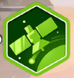 |
Orbit | A main action converting a probe into an orbiter by moving its figure to a planet's orbital space on the planetary board. |
| Land | A main action costing three energy to convert a probe into a lander placed directly onto a planetary surface. | |
| Scan | A main action using telescopes and energy to mark signals in sectors and collect data tokens from nearby stars. | |
| Complete Sector | An event triggered when a sector's data slot is filled, awarding points and publicity to the player with the most markers. | |
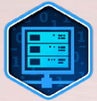 |
Analyse Data | A main action costing energy to empty your computer, gain points, and mark an alien life trace. |
| Play A Card | A main action allowing you to spend a card's printed cost to activate its specific game effect. | |
| Research | The core gameplay action allowing players to spend publicity to claim technology tiles and rotate the solar system. | |
| Research A Tech | The specific main action costing six publicity to select a tech tile and rotate the solar system. | |
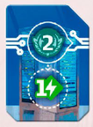 |
Computer Tech 02 | A specific computer technology tile that expands your data processing capacity or grants unique gameplay bonuses. |
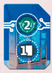 |
Computer Tech 03 | A specific computer technology tile that enhances your data storage options or provides specialized game advantages. |
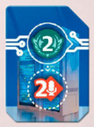 |
Computer Tech 04 | A specific computer technology tile that further expands your data capacity or offers unique strategic benefits. |
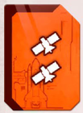 |
Probe Tech 01 | A specific probe technology tile that enhances planetary exploration or prioritizes lunar landings during gameplay. |
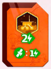 |
Probe Tech 02 | A specific probe technology tile that improves spacecraft navigation or grants additional exploration bonuses. |
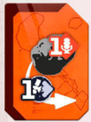 |
Probe Tech 03 | A specific probe technology tile that enhances orbital maneuvers or provides specialized scientific advantages. |
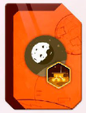 |
Probe Tech 04 | A specific probe technology tile that boosts spacecraft capabilities or offers unique strategic gameplay benefits. |
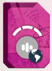 |
Telescope Tech 01 | A specific telescope technology tile that enhances signal detection or allows marking additional sector signals. |
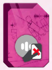 |
Telescope Tech 02 | A specific telescope technology tile that improves scanning range or grants extra data collection opportunities. |
| Telescope Tech 03 | A specific telescope technology tile that boosts signal tracking or provides specialized observational bonuses. | |
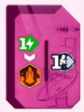 |
Telescope Tech 04 | A specific telescope technology tile that enhances deep space scanning or offers unique research advantages. |
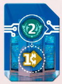 |
Computer Tech 01 | A specific computer technology tile that expands data processing slots or grants foundational gameplay bonuses. |
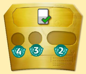 |
Goal Mission Completed | A scoring condition awarding points for every successfully completed conditional or triggerable mission card. |
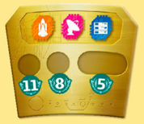 |
Goal Tech Set | A scoring condition awarding points for collecting complete sets containing one probe, telescope, and computer technology. |
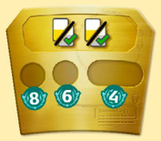 |
Goal Mission Pair | A scoring condition awarding points for pairing two completed mission cards or end-of-game scoring cards. |
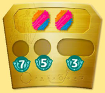 |
Goal Tech Pair | A scoring condition awarding points for every pair of technology tiles collected during the game. |
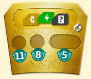 |
Goal Income Set | A scoring condition awarding points for collecting complete sets of three distinct income card types. |
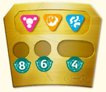 |
Goal Other Traces | A scoring condition awarding points for marking complete sets of three different colored life traces. |
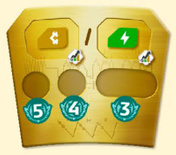 |
Goal Income Type | A scoring condition awarding points based on whichever income card type you have collected in greatest quantity. |
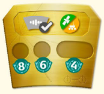 |
Goal Other Pair | A scoring condition awarding points for pairing sector victories with orbital or landed spacecraft markers. |
| Solo Progress Advance | A solo mechanic advancing the rival's progress marker to increase difficulty or trigger special abilities. | |
| Solo Progress Rival Strength | A solo mechanic increasing the rival's capabilities by adding advanced action cards to their deck. | |
| Credit | A primary resource token used to launch probes, exchange resources, or fulfill various game costs. | |
| Energy | A primary resource token spent on scanning stars, landing on planets, and analyzing collected data. | |
| Draw Any Card | An effect allowing you to take a replacement card from either the card row or the main deck. | |
| Draw Alien Card | An effect granting a powerful card from a specific alien species deck upon discovery. | |
| Draw Card Top Of Deck | An effect forcing you to take a random card directly from the top of the main deck. | |
| Tuck Income Card | A mechanic placing a card beneath your income card to permanently boost future resource gains. | |
| At A Planet | A status indicating a lander or orbiter figure is positioned on a planetary surface or its moon. | |
| In A Sector | A status indicating you have marked a signal within a specific sector's data slot. | |
| Mark A Signal | An action replacing a sector's data token with your marker while collecting the data for your pool. | |
| Any Trace | A universal life trace symbol acting as a wildcard to represent any of the three alien species markers. |
No sections match your search.